Installer Cesium Ğ1 sur Android
Pour installer Cesium sur Android ou un système libre apparenté (LineageOS, /e/, etc.), deux méthodes s'offrent à vous :
-
Via le Play Store
-
Sans le Play Store
Méthode n°1 : Via le Play Store
-
Ouvrez le Play Store.
-
Cherchez “Cesium”. Cliquez sur le bon résultat : c’est celui édité par Environmental Information Systems.
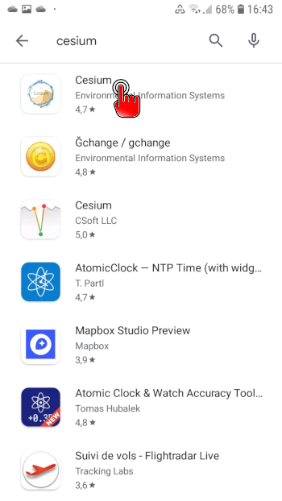
-
Cliquez sur “Installer”.
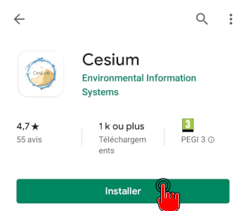
-
Laissez Cesium s’installer…
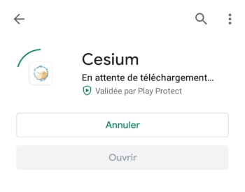
-
Cesium est installé, vous pouvez décider de l’ouvrir dès à présent.
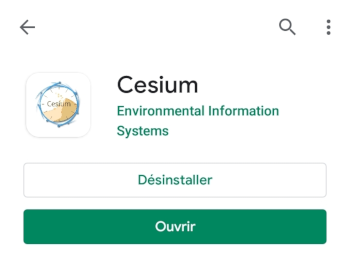
Méthode n°2 : Sans passer par le Play Store (.apk)
Les captures d’écran ont été faites sous Android 4.4.4.
Le processus sera similaire sous d’autres versions, mais peut-être pas parfaitement identique.
-
Autorisez l’installation d’applications en provenance de sources inconnues :
- Ouvrez les réglages : déroulez la zone de notifications et cliquez sur l’engrenage.
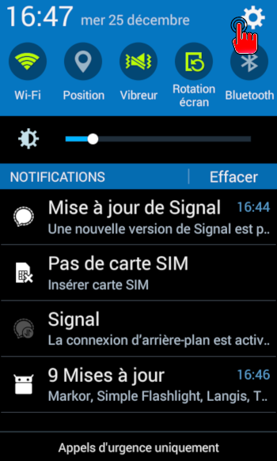
- Faites défiler les rubriques et entrez dans la rubrique “sécurité”.
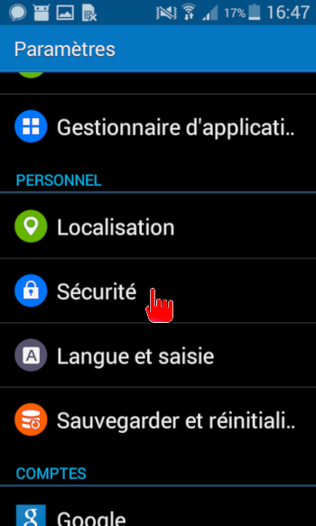
- Descendez dans les réglages de sécurité jusqu’à “autoriser l’installation d’applications en provenance de sources inconnues”, validez en cochant la case. Normalement, vous pourrez de nouveau décocher cette case après l’installation.
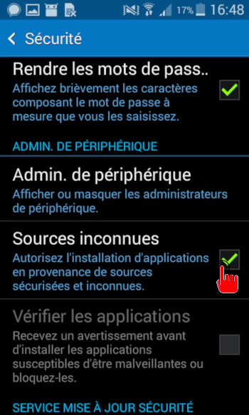
-
Téléchargez Cesium depuis la page téléchargement > “télécharger le .apk”
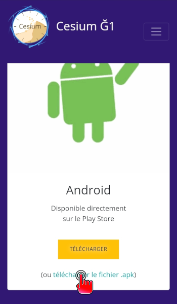
-
Cliquez sur Cesium-XXX.apk pour l’installer.
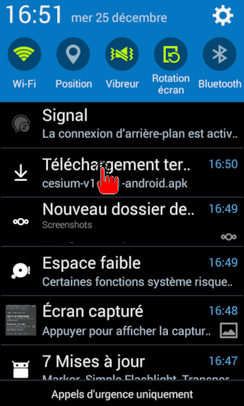
-
Acceptez les demandes d’autorisation.
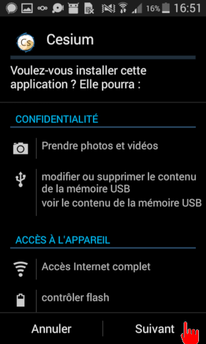
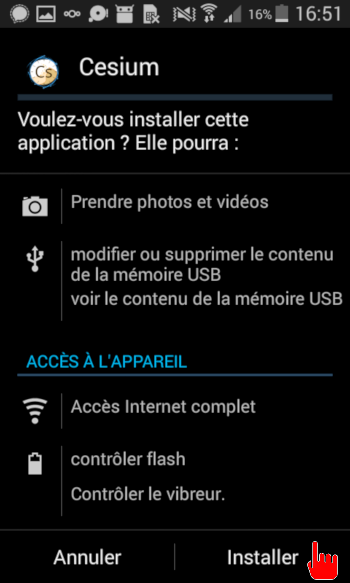
-
Laissez l’installation se faire…
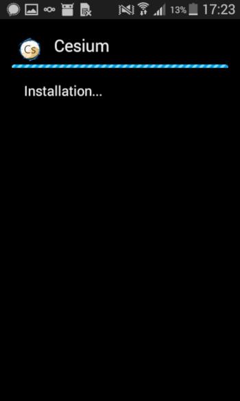
-
YOUPI ! Cesium est installé !
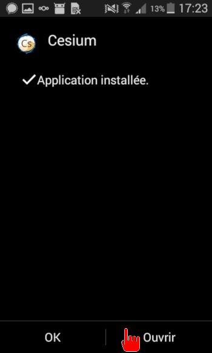